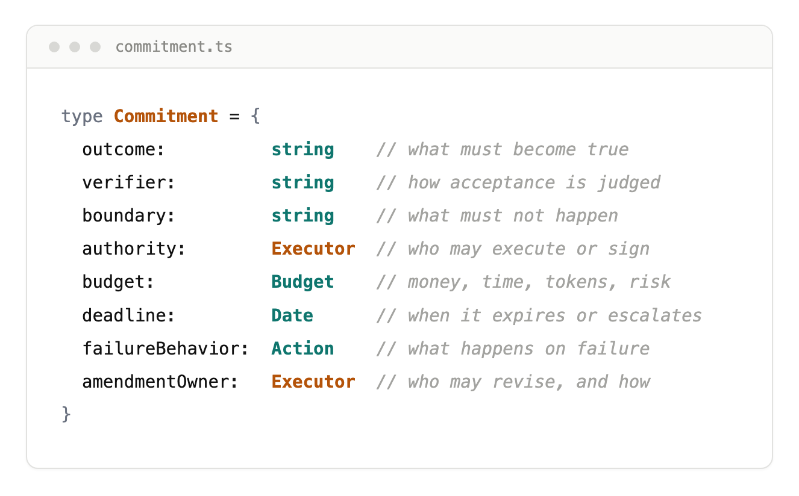
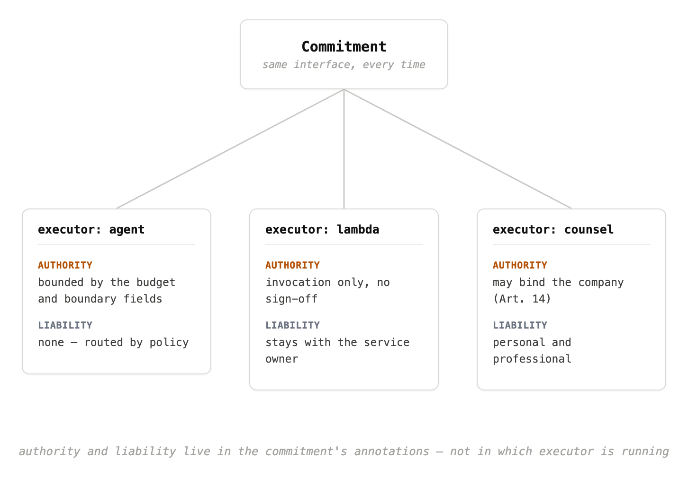
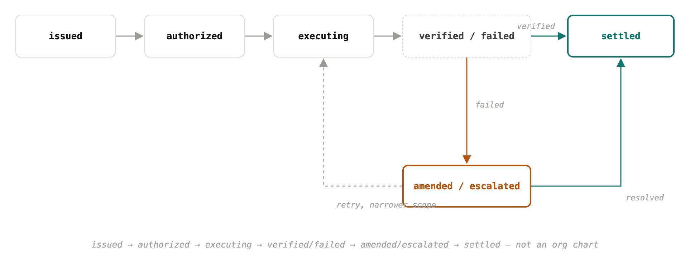

The Fully Agentic Company: The One Part No Agent Will Ever Run
An agent can run the company. It cannot be the reason the company exists.
A fully agentic company is an organization where almost every executor — models, services, and humans in the loop — can be substituted, except the authored commitments that say why the work matters.
Every company running agents hits the same failure, whether it has ten people or ten thousand. Delegate a real piece of work and watch what happens at the first handoff: the agent does most of the job, then a human finishes it, or a second agent picks it up, or the same job runs again next month against a newer model. The harness survives that handoff fine: rules files, skills, memory, whatever scaffolding the team built. What doesn't survive is anything about this specific piece of work. What counted as done, who was allowed to sign off, what it was allowed to spend, what should happen if it failed twice. That lived in someone's head, or in a Slack thread, and nobody wrote it down anywhere the next runner could read.
That is not a tooling problem. It is how the whole stack gets managed: catalog the frameworks, tune the prompts, wire the tool lists, design the handoffs, as if the agent itself were the thing worth tracking. That holds up until work crosses a boundary. A model version, a vendor API, a human who has to approve spend or liability. At each crossing, the system has nothing to pass along except prose and hope.
Swap the model, the vendor, or the human closing the loop, and the work continues or fails for reasons that have nothing to do with which weights answered last. The agent is the most replaceable part of the chain. The one thing that doesn't get replaced without someone new deciding the work still matters is whoever first judged it was worth doing in the first place. I didn't have a name for that person yet. I only noticed that every retry assumed their judgment had already happened, somewhere, unwritten.
The industry's framing is aimed at the wrong target. We optimize the worker instead of the contract the worker is supposed to satisfy. The LLM is an implementation detail.
What's missing has a simple shape. A spec of the outcome, who can sign off on it, what it can't do, what it can spend, and what happens if it fails, precise enough that swapping the worker doesn't change what counts as done. Nobody had written that down. Everybody had a prompt.
Three fixes look tempting here, and all three are wrong in a useful way.
Build a new Git. Agents write faster than anyone can review, diffs balloon, authorship gets murky. But ask what you actually need once an agent has changed something you're about to ship: who changed what, when, how to roll back, review gates that bind authority to a merge instead of a green checkmark. Commits and pull requests already give you exactly that. Agent authorship makes provenance and rollback more necessary, not less, because the author can't be pulled aside in the hallway and will "fix" the same bug three different ways in one afternoon if you let it. Git isn't the problem. Treating the prompt as the only durable object while Git quietly holds the only durable history is the problem.
Build a new IDE. For most of software's history the center of gravity was a human reading a buffer of text, and every tool since has assumed that. It breaks the moment the primary worker doesn't read that way. It traverses trees, calls APIs, and emits patches against a repo it may never open as a single scrolling file. The editor stays useful for the human who signs off at the end. It stops being the cockpit of the work.
Build a new operating system, the layer that schedules processes and owns the desktop. This is the one with the most gravitational pull, and every vendor has an "OS for your company" slide now, which is exactly why the phrase needs to be dropped before someone drops it on you in the comments. The desktop stack solves isolation, drivers, and interactive sessions for one person at a keyboard. None of that is the failure mode here. What's actually missing is organizational: no shared definition of done, no named authority, no budget, no record of why the task existed. Replacing Windows doesn't give you any of that, any more than replacing the agent did.
None of the three fail because they're old. Each one gets asked to store something it was never built to hold: a durable spec of outcomes, authority, and limits that survives when the worker changes.
At this point I stopped thinking about an operating system for a computer and started thinking about an operating system for an organization of intelligences.
Anything that can actually perform work belongs in a single category, regardless of whether it runs on silicon, in a browser tab, or in a person's professional judgment. Call it an executor. A language-model agent is an executor. So is a GitHub Action, an AWS Lambda, a webhook into a SaaS product, a human designer reviewing pixels, a human lawyer signing a contract, and someday a robot on a factory floor. The label sounds abstract until you notice how much of our stack already treats these things interchangeably at the edges: something receives an input, mutates state, and reports back. The difference is not metaphysics. It is whether the surrounding system knows how to invoke the capability on purpose instead of hoping someone remembers to click the right button.
That surrounding system does not replace GitHub, Figma, Slack, Salesforce, Jira, or the payroll department. Those tools stay where they are. Linux still runs on the metal; AWS still runs the metal at scale. The new layer decides when to open a pull request, when to attach a design file, when to post a status line, when to file a ticket, when to spend inference dollars, when to page a person who can say no. Orchestration, not replacement. The routing table might send one job to a local model, another to a hosted API, another to an existing SaaS integration that already passed procurement, another to a contractor who has done this twice before. From the organization's point of view those are the same kind of entry: callable capacity with an interface and a cost profile. Once I framed it that way, the hybrid world stopped feeling like a compromise and started feeling like the only honest picture of the next few years: legacy systems, humans, SaaS, clouds, and a growing swarm of agents, all coexisting while something above them routes work by specification instead of by habit. The abstraction should feel obvious once you say it out loud. We already mix executors; we just pretend the only interesting ones are the ones that autocomplete.
I want to be explicit about a mistake this framing invites, because glossing over it would wreck the whole argument later. A licensed human professional is not an API with higher latency. Authority, consent, and liability are properties of the commitment, not the executor. When a lawyer signs or a physician approves, the organization is not swapping a slow model for a fast one; it is routing through an executor whose role includes duties the system cannot fabricate. EU AI Act, Article 14 (human oversight) encodes part of that intuition for high-risk automation: humans remain accountable in the loop. My point is structural. The commitment must say who may bind the company, what evidence satisfies oversight, and what happens if an automated path reaches a boundary only a person can cross. Treating people as executors does not demote them. It forces the spec to carry the ethics and the law instead of hiding them inside "call a human when stuck."
Everything is a commitment to an outcome. I state that plainly because slogans are cheap; the mechanism is not. If this law is wrong, the rest of the architecture collapses back into agent catalogs and prompt libraries. If it is right, most of the hierarchy I will describe later is bookkeeping around the same object. A commitment is not a prompt, a Jira ticket title, or a vague OKR on a slide. It is a durable object the organization can verify, amend, and route to any executor that fits the authority field. Concretely, every commitment carries the same schema:
- outcome: what must become true in the world when this is settled
- verifier / success metric: how an observer decides the outcome was reached, without re-litigating intent
- boundary: what must not happen while pursuing the outcome
- authority: who may execute, delegate, or sign acceptance
- budget: money, time, tokens, headcount, or risk appetite consumed along the way
- deadline: when the commitment expires or must escalate
- failure behavior: what the system does when verification fails or the budget is exhausted
- amendment owner: who may revise the commitment and under what logging rules

Tasks litter our calendars because they name activity without binding acceptance. "Refactor the handler" is a task. "The public API is unchanged, all tests pass, no PII logged, merged by an engineer on the ownership roster, spend under forty dollars of CI and inference, by end of sprint, otherwise roll back and notify platform." That is a commitment. The discrimination test is the operational hinge, the question I want engineers to ask the way end-to-end arguments once trained a generation to ask where state should live: if the executor were swapped tomorrow, would this specification still fully determine acceptance? If yes, it's a commitment. If no, it's a task. Swap Claude for GPT, swap an agent for a Lambda, swap a Lambda for a staff engineer on vacation coverage. The acceptance criteria do not care. That indifference is the point. It is how you stop re-typing intent every time the worker changes.

Commitments are revisable only by a named authority, and every amendment is logged. That is not a loophole; it is the adult version of governance. Incomplete-contract theory was never an excuse to leave acceptance implicit; it was a warning that you will need a legitimate process to revise terms when the world surprises you. Real work encounters contingencies no author enumerates on day one. Immutability sounds principled until a verifier was wrong, a boundary was too tight, or the market moved. Frozen specs then fail quietly or get bypassed in shadow channels, which is how companies lose traceability while keeping the fiction of control. A logged amendment chain gives you auditability without pretending you are omniscient. You know who changed the definition of done, when, and why. That is strictly stronger than immutability for any organization that has to learn. It also mirrors how serious engineering already treats policy: error budgets can be renegotiated, but the negotiation is recorded and owned, and someone is named on the signature line.
Once acceptance is defined outside the executor, routing becomes a search problem instead of an identity crisis. The system may choose agents, services, humans, and tools freely as long as each choice respects authority and stays inside boundary and budget. The amendment owner field closes the loop on governance: without a named owner, revisions become meetings; with one, they become events the system can record and replay. Failure behavior is not an afterthought; it is how you prevent a half-finished outcome from masquerading as progress. Escalate, retry with a narrower scope, spend down a contingency budget, or halt and surface a conflict. Those paths belong in the object, not in an engineer's memory of what we usually do when the suite stays red. Deadlines force the same honesty. A commitment without a time box is often a wish dressed as a plan.

I did not invent this shape from first principles on a whiteboard. Pieces of it have been hiding in plain sight for decades across systems that were never marketed as "agentic," and naming the pattern is less about novelty than about assembly.
The fragments are not hard to find once you know what to look for. Google's SRE error-budget policy already binds an outcome to a metric and spells out what happens when you exhaust the budget: slow releases, freeze deploys, escalate to humans who can renegotiate. What it does not carry is executor authority inside the object: the policy tells you when the service has failed its side of the bargain, not which worker may spend the next dollar of budget to recover. Kubernetes controllers live in the same neighborhood. You declare desired state in a spec; the controller watches status and reconciles until they match. That is commitment-shaped desire without budget, without a named amendment owner, and without accountability for the reconciler itself when reconciliation thrashes or costs spike. RFC 9315 on intent-based networking pushes further toward outcome without prescribing method: tell the network what must be true, let the control plane choose paths. But the idea stays fenced inside one domain and never generalizes to "who may bind the company on a contract."
The Contract Net Protocol, Reid Smith, 1980, got the executor-selection loop right decades before anyone marketed it as "multi-agent": announce a task, collect bids, award the contract. It still assumed the task description was the whole story; it did not standardize verifiers, boundaries, or logged amendments when the world shifted mid-flight. Enterprise workflow engines and business-process-management suites got even closer in spirit: BPMN diagrams, service-level agreements, escalation rules, sign-off gates, the whole apparatus. But they bound the process to a fixed graph of steps inside a closed set of systems the company already owned. They never had a schema for authority portable across an open pool of executors that might include a model you rent by the token or a contractor who quits mid-project. That is the field they are missing: not any one property, but portability across executors nobody in the company employs. Even an ordinary pull-request review policy, the kind every team already has, encodes boundary and authority, who may merge and what checks must pass, but rarely states the outcome the merge is supposed to achieve beyond "green CI." You get gates without a verifier tied to customer-visible truth. Each piece is missing a different field of the schema. That is not decoration. When six unrelated fields (site reliability, cluster control, networking standards, distributed AI coordination, enterprise workflow orchestration, and everyday eng policy) independently converge on partial versions of the same object, I take that recurrence as evidence for the thesis itself. The pattern was always there, scattered across systems that never had to talk to each other; nobody had given it one name.
The stable unit is the commitment. Once you accept that, the organizational picture stops being a metaphor and becomes the proposal. I mean it literally. At the top sits a CEO, human at first, but still a role in a structure, not a mystical essence. Below that, a Chief of Staff translates the CEO's priorities into running work and shields the hierarchy from noise. The Organization is not a bag of agents; it is a company with goals, budget, policy, stored knowledge, hierarchy, specialization, and measured performance. Those are the same nouns a board deck uses, because the abstraction only works if it can be operated by people who already know how firms behave. Departments mirror how people already know how to work: Engineering, Marketing, Sales, Finance, Legal, Research, Operations. Inside Engineering you have Teams: Backend, Frontend, Infrastructure, AI, QA, Architecture, Performance. Specialization compounds. At the bottom, Executors do the actual work: a language-model agent, Cursor, an OpenHands loop, a GitHub Action, Redis, an AWS Lambda, a staff engineer, a designer, a lawyer. Notice what is absent from that stack: there is no LLM layer in the org chart. The model is an implementation detail inside whichever executor was hired for the job.
Running that company requires a Talent Manager the way a real firm requires recruiting and workforce planning: not a static model picker, but continuous learning over a roster that mixes vendors, versions, and humans. The system keeps score on who is good at what. One executor excels at refactors and stumbles on large migrations; another is fast and expensive; a third shines on this codebase and drags on the next. Routing becomes staffing: match the commitment's authority and budget fields to an employee record, not to a logo on a slide deck. You don't pick a model. You pick an employee. That choice only makes sense if performance is measured the way it is for people who stay on payroll. Every executor gets KPIs: success rate, average cost, average latency, bug rate, rollback rate, user satisfaction, contribution to shared knowledge. Those numbers feed real performance reviews. Not theater. Consequences. When an executor keeps missing its commitments, it gets fired. I mean fired: removed from the roster, not routed around politely, not "retired" into a deprecated config file nobody reads.
OneManCompany (Huawei Noah's Ark Lab and UCL, April 2026) already built a large slice of this before I finished typing the outline. They run a CEO-down hierarchy, a community Talent Market, an automated HR pipeline with performance reviews, PIPs, and automated offboarding, plus organization-level self-evolution. On PRDBench they report 84.67% success, beating baselines by at least fifteen points. I am not arguing past that paper because I am embarrassed to share its vocabulary; I am arguing past it because its scope is still too narrow for the claim this essay makes. OneManCompany organizes AI talents inside one framework. My claim is that the same company model has to extend to every executor, including a human lawyer and an AWS Lambda function, because the moment you say "this only applies to AI workers," you reintroduce the exact human/machine split this whole piece exists to erase. They supplied the proof that the metaphor runs in production; I want to take that proof and push it one level further, not retreat into "agents only."
That push lands on a distinction the title has been pointing at since the first page. The CEO seat in this hierarchy is a runtime role. The organization can restructure it, hand much of it to a Chief of Staff, automate the parts that are pure scheduling and escalation, replace the human in the chair when someone better fits, exactly like everything below it. The founder is not a seat in the hierarchy at all. The founder is the source of the commitments the entire hierarchy exists to fulfill: why this company exists, what outcomes are worth pursuing, who may amend them when reality intrudes. The org can fire an agent, split a Team, swap executors, even replace its own CEO function when performance demands it. It cannot author its own founding commitments. That authority does not bubble up from the Talent Market and it is not emergent from organization-level evolution, any more than a controller may rewrite the spec because reconciliation got expensive. It is the same rule as the amendment protocol from the previous section: commitments are revisable only by a named authority, and every amendment is logged. That rule now applies one level up, to the organization's authority over itself. Everything in the hierarchy, including the CEO function, is an executor the system may substitute; the founder's authorship of the original commitment is the one thing that cannot be substituted without starting a different company. An agent can run the company. It cannot be the reason the company exists. That is the one part no agent will ever run.
None of the day-to-day mechanics are optional either. Knowledge Promotion is the piece I care about most operationally, because memory alone does not change how the next project runs. When an executor solves a problem once, the organization asks whether that lesson deserves to become binding policy, not a note in a vector store, but a rule the next team must obey. A retrospective surfaces that every greenfield React effort should standardize on a particular data-fetching library; if the org accepts it, that acceptance is logged and enforced on the next commitment, not left as folklore. The organization also evolves itself. Maybe a new Team is warranted because frontend work keeps bouncing through three executors before quality clears the bar. Maybe a Service causes eighty percent of regressions and the workflow around it needs restructuring. Maybe forty percent of inference spend goes to a backend that adds no measurable value and should be cut. Self-improving organization, not self-improving agent: the unit that learns is the whole firm watching thousands of settled commitments.
None of this is free, and I want to say so before the vision gets ahead of the evidence. Multi-agent orchestration has a real failure record. MAST, a Berkeley taxonomy built from 200 annotated conversation traces across seven open-source frameworks, catalogs fourteen recurring failure modes and finds gains over single-agent baselines are often minimal. One widely used framework cleared only a third of its benchmark tasks. Cognition has argued outright against multi-agent architectures for exactly this reason: context fragments across agents faster than coordination overhead pays for itself. So the organization I'm describing is not a default good. It has to earn every layer of hierarchy against the baseline of one competent executor doing the whole job, task class by task class. Most of the time, for most tasks, it probably shouldn't exist yet.
The founder distinction I drew a few paragraphs back is not a forecast about how fast any of this arrives. It is a claim about where authority has to live if the model is coherent. So before anyone treats the org chart as tomorrow's press release, I want to say what I think the next stretch actually looks like. The fully agentic picture only works if it survives contact with the stack you already pay for.
Windows is still on the laptop. GitHub still holds the commits. Slack still carries the pings. Salesforce still owns the pipeline object. AWS still bills by the hour, and people still show up with judgment, relationships, and liability insurance. None of that evaporates because a routing layer got smarter. What changes is that the company stops treating those endpoints as separate religions and starts treating them as executors in a roster, same as the agent, same as the Lambda, invoked when a settled commitment says they are the right tool for this slice of the outcome. The layer I have been describing is not a replacement OS; it is the switchboard that decides, for each authorized step, whether the next move is a pull request, a Figma comment, a customer email, a human sign-off, or an inference call. That is the hybrid world we are already inside, and I expect it to stay hybrid for a long time. The boring truth is that most value will keep leaking through interfaces built in the 2010s, staffed by people who do not want their profession reduced to a webhook, and that is fine. The system's job in that world is narrower and harder than "automate the company": it is to keep commitments intact while the work hops among tools and species of worker without re-typing intent at every hop.
This part is a guess, not a claim. Stretch the horizon to something like ten years and I can imagine organizations that treat self-reconfiguration as normal operations: Teams spun up because verifiers keep failing on the same boundary, spend reallocated because the metric says so, executors fired in bulk when their KPI curves flatline, while the founding commitments and their amendment log persist across generations of everything below. At that distance the object might look less like "a piece of software with agents glued on" and more like an organization of intelligences held together by contracts that outlive any single model vendor. I might be wrong about the shape; I might be wrong about the timeline. I am not staking the essay on that sketch. I am saying that if the commitment idea is right, the durable thing is the obligation and its logged revisions, not whichever executor happened to satisfy it this quarter.
I have strong opinions about the mechanism and weak ones about several consequences. These are the problems I have not closed, and I am not going to pretend otherwise.
When the outcome cannot be measured cleanly (brand trust, safety culture, "does this feel like us"), what belongs in the verifier field without turning judgment into theater? When the success metric is numeric and the executor is clever, what stops Goodharting: optimizing the chart while violating the boundary the founder actually cared about? When two active commitments collide (speed versus safety, growth versus margin), who breaks the tie, and is that decision itself a commitment with an amendment owner, or something we have not named yet? Which human duties stay non-delegable no matter how capable the roster gets: bearing criminal liability, consenting to medical or legal acts, deciding that the company should exist at all? And maybe the question that keeps me up at night: is the hierarchy even load-bearing, or would a flatter graph of commitments with explicit escalation edges do the same job without the CEO costume and the department labels?
I do not have satisfying answers. I list them because the model should invite correction here, not sell certainty.
Here is one thing I am willing to be wrong about in public. By the end of 2028, at least one engineering organization widely read on Hacker News will publish an internal standard where the default handoff from leadership to execution is a commitment object (outcome, verifier, boundary, authority, budget, deadline, failure behavior, amendment owner) with amendments logged the way production config changes are logged today, and where prompt libraries or chat threads are explicitly documented as non-authoritative scaffolding around that object. You will be able to point to their write-up and see the schema, not just a culture post about "AI transformation." If instead the industry is still primarily shipping tasks disguised as prompts, with acceptance renegotiated in every new thread and no named amendment owner when scope slips, then this essay mistook a useful thought experiment for a direction the market will actually take. Treat the rest of it as architecture fiction.
FAQ
- What is a commitment object in an agentic company?
- A durable specification of outcome, verifier, boundary, authority, budget, deadline, failure behavior, and amendment owner — precise enough that swapping the executor does not change what counts as done.
- What is the one part no agent will ever run?
- Authorship of the founding commitments: why the company exists and which outcomes are worth pursuing. Agents can execute and even occupy CEO-like runtime roles; they cannot substitute the source of those obligations without starting a different company.
- How is this different from building an 'OS for agents'?
- Desktop and process isolation solve the wrong problem. The failure mode is organizational: no shared definition of done, no named authority, no budget, and no record of why the work existed across handoffs.